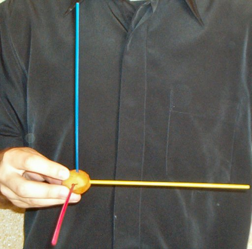
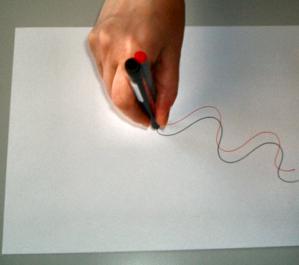
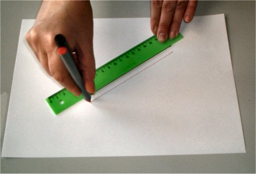

Translaţia

Fig. 2
Materializarea unui sistem de axe legat solidar de corp.

Fig. 3
Traiectoriile părţilor unui corp care se deplasează prin translaţie.

Fig. 4
Traiectoriile părţilor unui corp care se deplasează printr−o translaţie rectilinie.